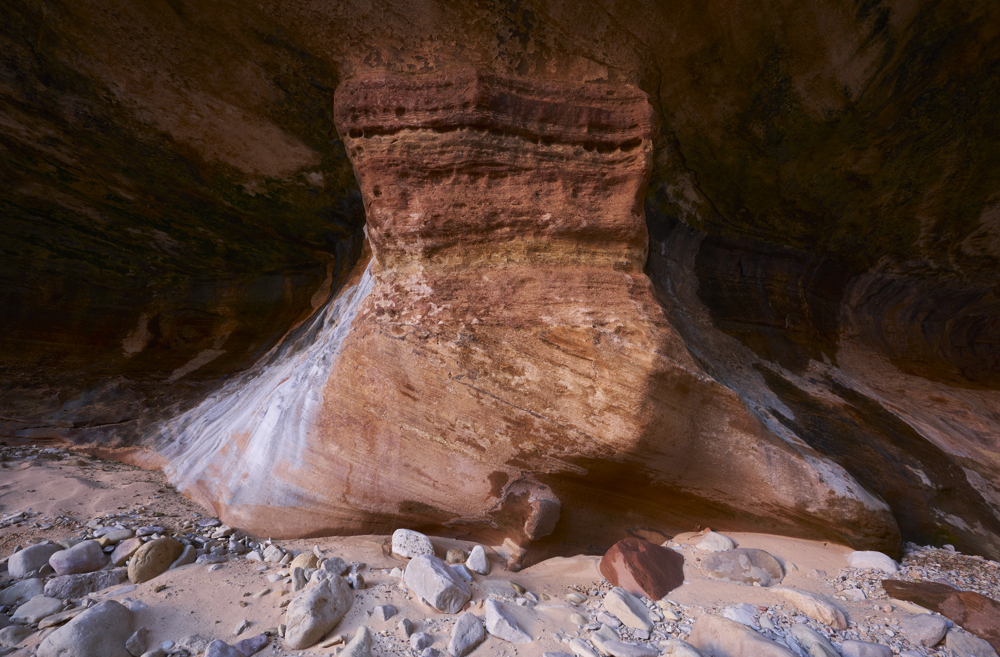
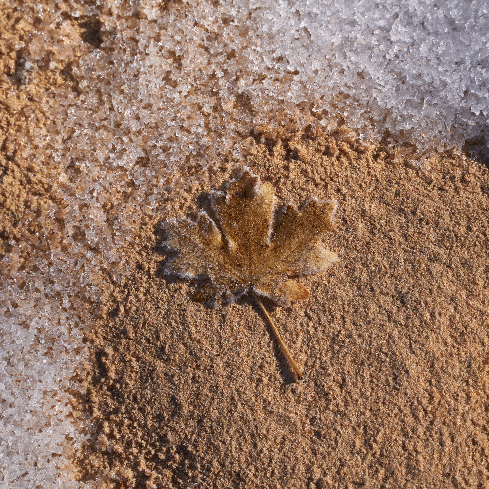
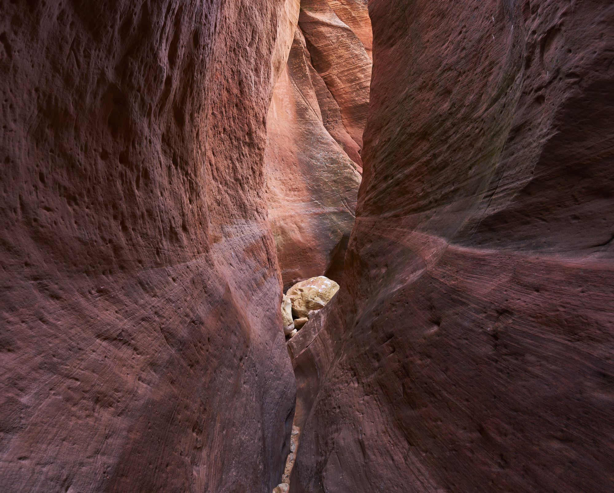
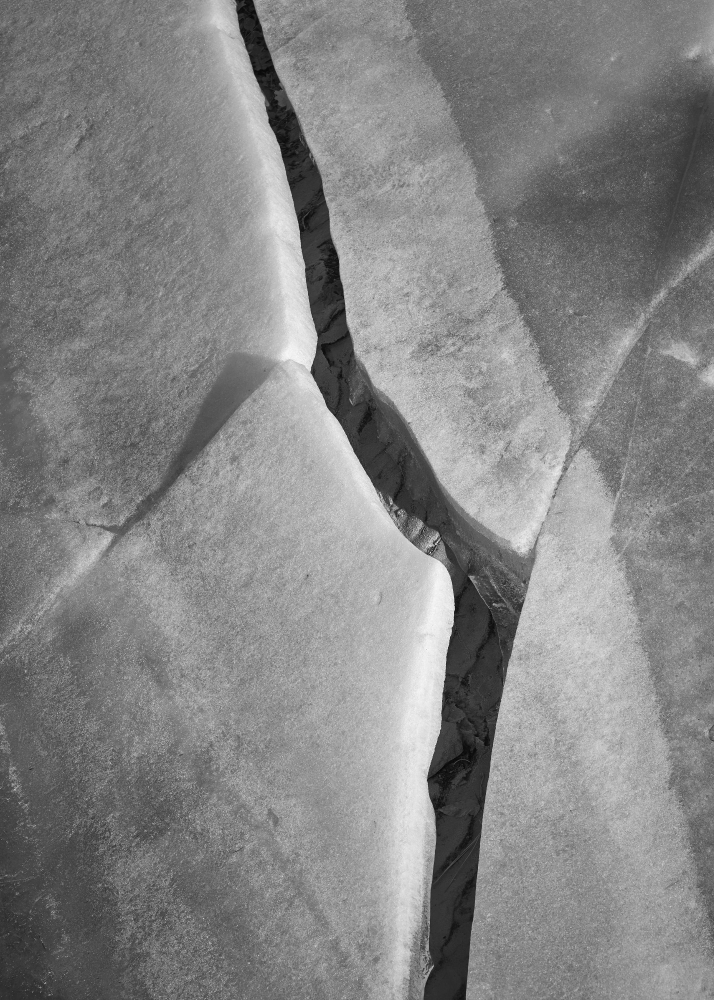
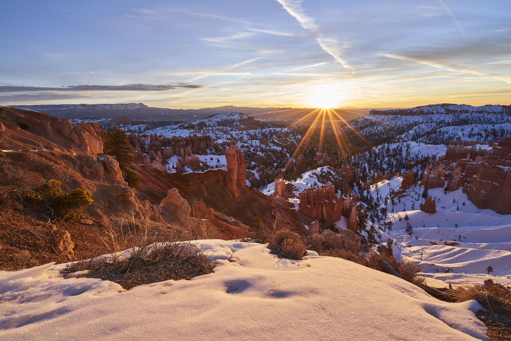
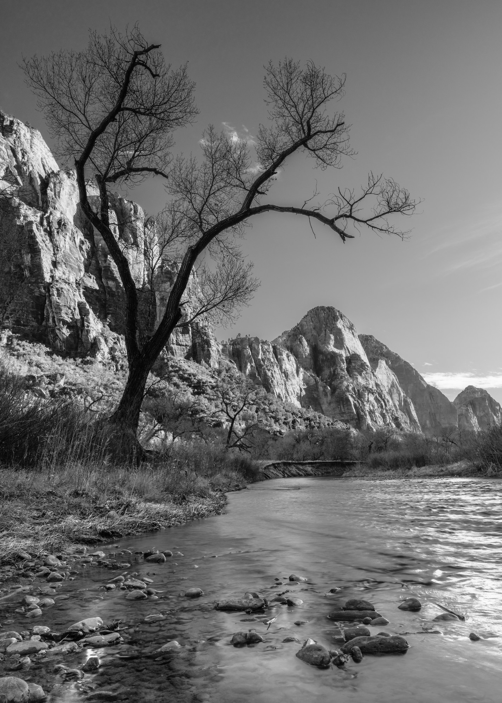
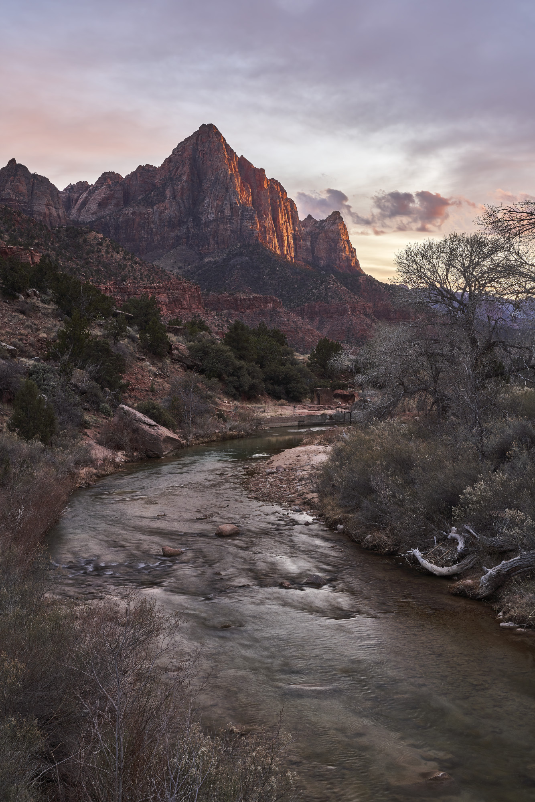

Sony α7R III / Sony Vario-Tessar T* FE 16-35 mm F4 ZA OSS (SEL1635Z) / 16mm / 1s / f/11 / ISO 100

Sony α7R III / E 28-75mm F2.8-2.8 / 52mm / 1/50s / f/8 / ISO 100

Sony α7R III / E 28-75mm F2.8-2.8 / 75mm / 1/400s / f/7.1 / ISO 100
Sony α7R III / FE 16-35mm F4 ZA OSS / 16mm / 13s / f/11 / ISO 100
Sony α7R III / E 28-75mm F2.8-2.8 / 34mm / 1s / f/16 / ISO 100

Sony α7R III / Sony Vario-Tessar T* FE 16-35 mm F4 ZA OSS (SEL1635Z) / 16mm / 1/30s / f/11 / ISO 100
Sony α7R III / Sony FE 70-300mm F4.5-5.6 G OSS / 146mm / 1/100s / f/13 / ISO 100

Sony α7R III / FE 16-35mm F4 ZA OSS / 24mm / 1/5s / f/11 / ISO 100

Sony α7R III / FE 70-300mm F4.5-5.6 G OSS / 179mm / 1/200s / f/5.6 / ISO 100
Sony α7R III / Sony FE 70-300mm F4.5-5.6 G OSS / 300mm / 1/250s / f/5.6 / ISO 100
Sony α7R III / Sony Vario-Tessar T* FE 16-35 mm F4 ZA OSS (SEL1635Z) / 16mm / 1/15s / f/11 / ISO 100
Sony α7R III / E 28-75mm F2.8-2.8 / 46mm / 1s / f/13 / ISO 50
Sony α7R III / FE 70-300mm F4.5-5.6 G OSS / 198mm / 1/80s / f/11 / ISO 100

Sony α7R III / Sony Vario-Tessar T* FE 16-35 mm F4 ZA OSS (SEL1635Z) / 20mm / 1s / f/11 / ISO 100